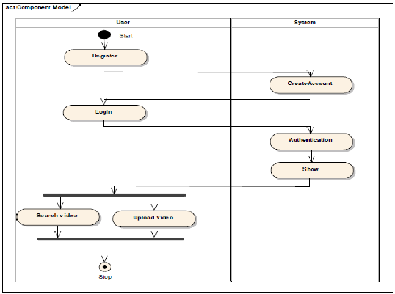
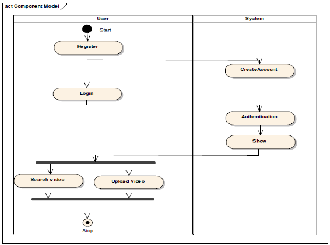

Теж крута штука, яка дуже часто використовується на практиці. Діаграма активностей описує динамічні аспекти поведінки системи у вигляді блок-схеми, яка відображає бізнес-процеси, логіку процедур і потоки робіт — переходи від однієї діяльності до іншої. По суті, ми малюємо алгоритм дій (логіку поведінки) системи або взаємодії кількох систем. Нижче — приклад подібної діаграми для інтернет-магазину.
Діаграма активностей для сайту магазину максимально доступно пояснює, які є інтеграції в системі. Актор (в нашому випадку — покупець), що зайшов на сайт, робить замовлення. Далі у нас відбувається розгалуження: перевіряємо, чи є користувач оптовиком (Так/Ні). Якщо він не зареєстрований в системі і не оптовик, замовлення відправляється в retailCRM. Якщо користувач зареєстрований, його замовлення потрапляє в Navision. При цьому між retailCRM і Navision відбувається синхронізація залишку і статусів.
Цю базову діаграму ми можемо доповнити, розширити, вона може виступити частиною документації і дає загальне уявлення про роботу системи.
 
